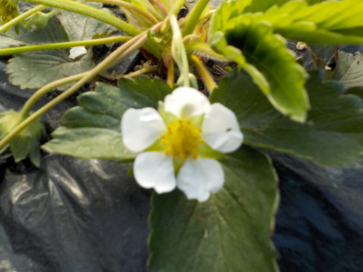

遊びで植物を育てよう
2021/07/10
イチゴに小さい花が咲いていました。

小さい花は実も小さいんだっろうな。
そして美味しくない。
でも、あまり変化のない苗なので小さくても花が咲いたこと自体はうれしいです。
そろそろライナーが出てくれないかな。
【イチゴTOP】
【果物TOP】
【園芸TOP】
2021/06/08
サントリーらくなりイチゴを食べました。

イチゴが赤くなったので食べました。
味の感想ですが、甘さが少なく爽やかな味でした。
そんなに甘くはないんだろうなと思っていたので、想定内です。
食べ方を工夫しようと思いました。
【イチゴTOP】
【果物TOP】
【園芸TOP】
2021/05/16
らくなりイチゴの花が咲きました。遅いです。

やっとらくなりイチゴの花が咲きました。
この苗を買うときに花付きと花無しがあって、花無しの方が茎が太かったのでこれにしたんですが、失敗だったかな。
同じ環境で育ってるんだから、花が先に咲いた方が成長がいいってことですよね。（たぶん）
1月以上前に花が咲いた苗を買っていれば、今頃はきっと育ったイチゴを食べてたんだろうな。
【イチゴTOP】
【果物TOP】
【園芸TOP】
2021/04/10
サントリーの四季なりいちご「らくなりイチゴ」を買いました。

サントリーの本気野菜ってキャッチが、菅総理の働く内閣みたいです。
商品名「らくなりイチゴ」ってわかりやすいけど、ゆるいですね。
美味しいイチゴが出来るといいですが、期待していいのかな。

ポットから鉢に植替えしました。
本当はもっと大きいものに植え替えた方がいいみたいですが、いいサイズのものがありませんでした。

こちらは別のイチゴ苗です。
いままで受粉作業をしたことがなかったんですが、受粉すると大きい実が出来るそうなので今年初めて受粉作業をしました。
本当に大きいのができｓるかな。
【イチゴTOP】
【果物TOP】
【園芸TOP】
2013/08/10
サマールビー全滅です。
あらら、枯れちゃった。

植え替えしてもダメでした。
まあいいや。あんまり美味しくなかったし、見た目もいまいちだったし、種も大きかったしね。
サマールビーはもうあきらめます。
他に美味しい四季成り苺ってないかなー。
【イチゴTOP】
【果物TOP】
【園芸TOP】
2013/07/14
苺が枯れちゃったのでプランターに避難しました。
夏の暑さのせいか、サマールビーが1本枯れちゃいました。
普通の苺は元気なのになー。
生き残ってるサマールビーも花はあるけど、実が出来てなくて元気がなさそうです。
なので日当たりの強い地植えを止めて、プランターに植え替えました。

元気になって実が出来るといいんですが、どうでしょう？
【イチゴTOP】
【果物TOP】
【園芸TOP】
2013/06/30
苺のランナーが出ました。
まだ花があるんですが、サマールビーのライナーが出ました。

これをドンドン増やして、沢山収穫したいです。
一気に10株くらい増えないかなー。
大事にしなくちゃ。
【イチゴTOP】
【果物TOP】
【園芸TOP】
2013/06/09
サマールビーはまだまだ収穫できます。
普通の苺はもう終わっちゃったけど、サマールビーはまだ実がなっています。

ホントに四季なりなんですね。
まだまだ出来そうです。でも2株しか植えてないのであんまり食べれない。
【イチゴTOP】
【果物TOP】
【園芸TOP】
2013/05/12
苺を食べました。
先日植えた苺（サマールビー）ですが、買った時から付いていた実が赤く熟れてきたので食べてみました。

大きな種が気になるかな？と思ったんですが、あまり気になりませんでした。
食べた感想は、そんなに甘くないなって思いました。
あと、酸味が強いかな。
まだ植えたばっかりで、コンディションはよくないと思うので、本来の味じゃないかもしれません。
次に期待します。
【イチゴTOP】
【果物TOP】
【園芸TOP】
2013/05/03
四季成りの苺ってあるんですね。
ホームセンターで四季成りの苺苗を見つけました。

サマールビーって名前でした。
これからずーっと苺が食べれるなんてめちゃくちゃいい話じゃないですか。
本当にそんなこと出来るんでしょうか？
凄い！
でもこんだけ凄い品種改良のものを食べても大丈夫なの？って気にもなります。

もう実が付いてます。
種が大きいのかな？なんか目立っていますね。
美味しいといいですね。
【イチゴTOP】
【果物TOP】
【園芸TOP】
苺は美味しい。沢山食べたい。
【おいしいものを食べよう。】【しっかり寝よう。】
【ソロ活をしよう!】【季節感のあることをしよう。】【動画視聴はほどほどに。】【当サイトの全てのコンテンツは無断転載禁止です。】